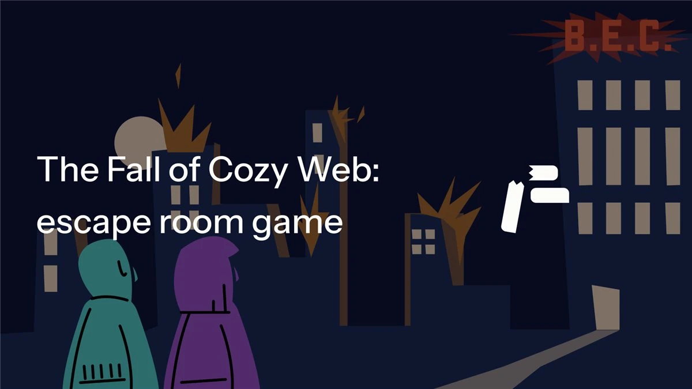
The Fall of Cozy Web:
escape room video game
Creating AI critical expressive interactions, a vibe coded video game
The concept
The game plays with the idea of the Internet's last protected-gatekept layer, the "cozy web" falling, letting Ai infiltrate private chat rooms.
It presents the challenge to the players whether they can differentiate between their partner and Ai.
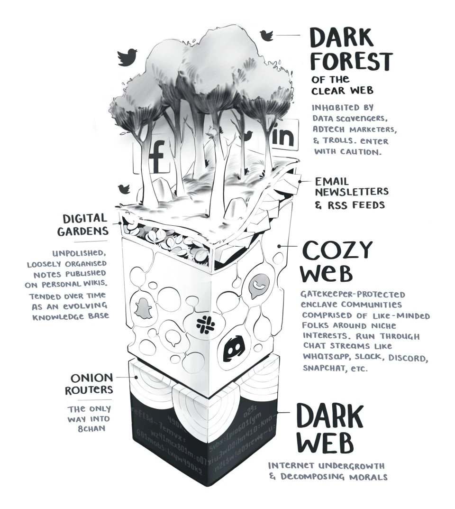
Story
,,2030 the artificial intelligence developed by B.E.C. tech, KawAi took over the World.
By the bots spreading misinformation, chaos broke out in society. No one could tell what was true and what was false.
Two brave developers decided to pull the plug and end KawAi's reign.
They drove their way to B.E.C.'s HQ."
Starting screen
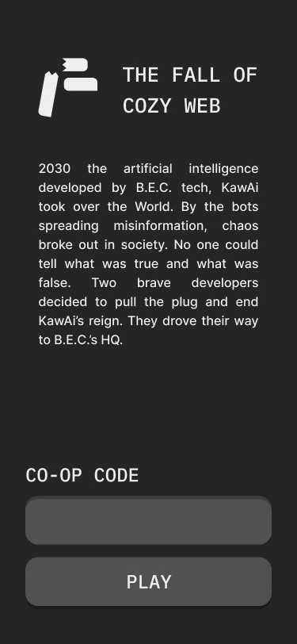
The informant's screen (P1)
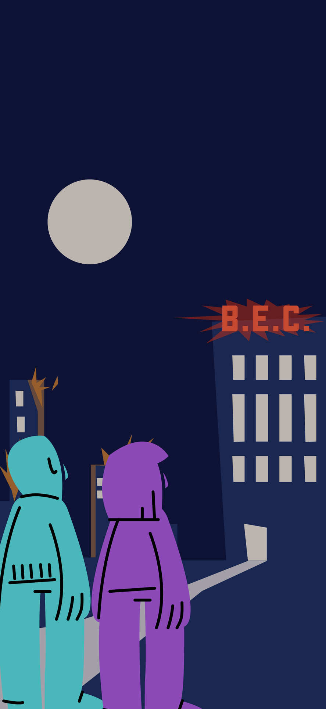
The infiltrator's screen (P2)
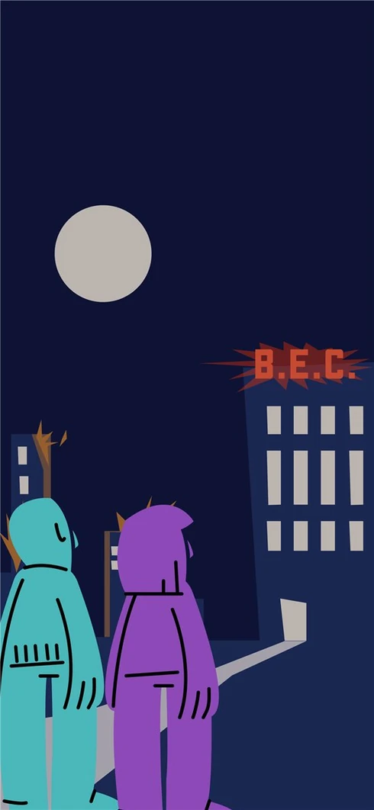
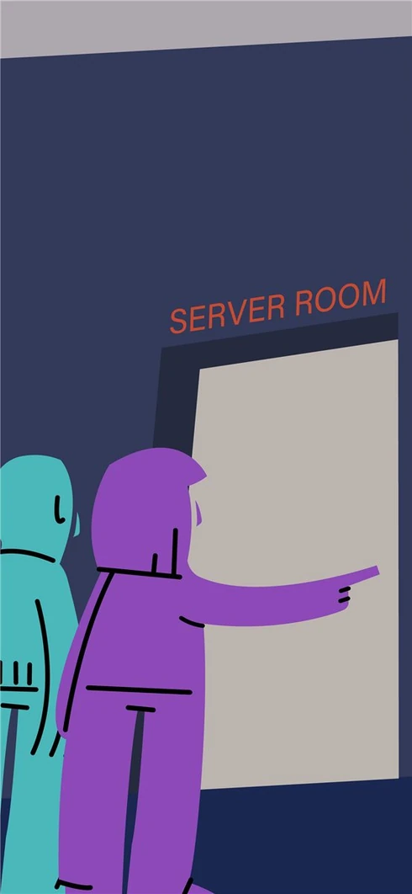
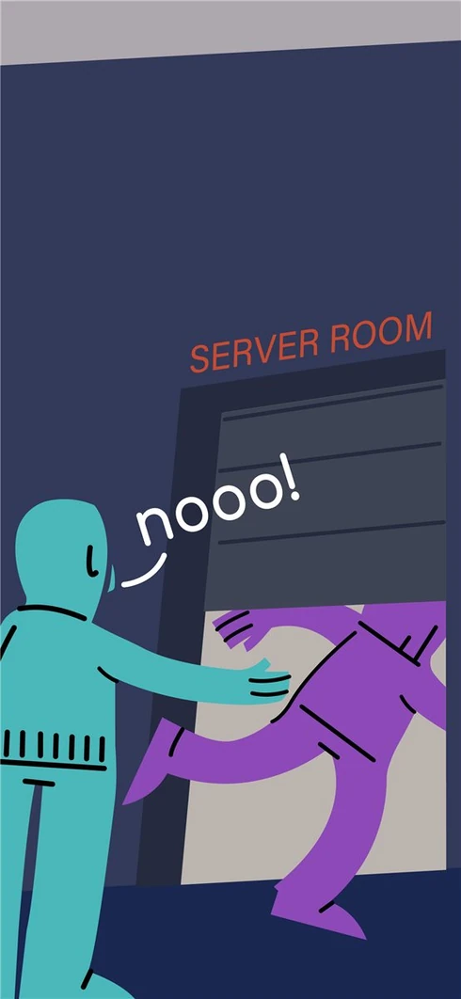
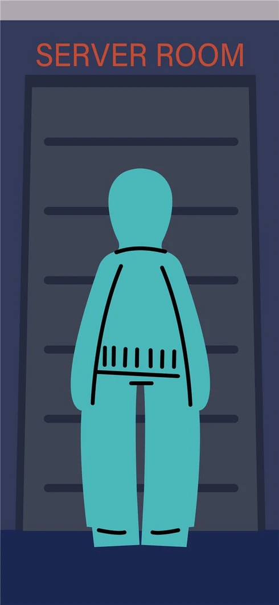
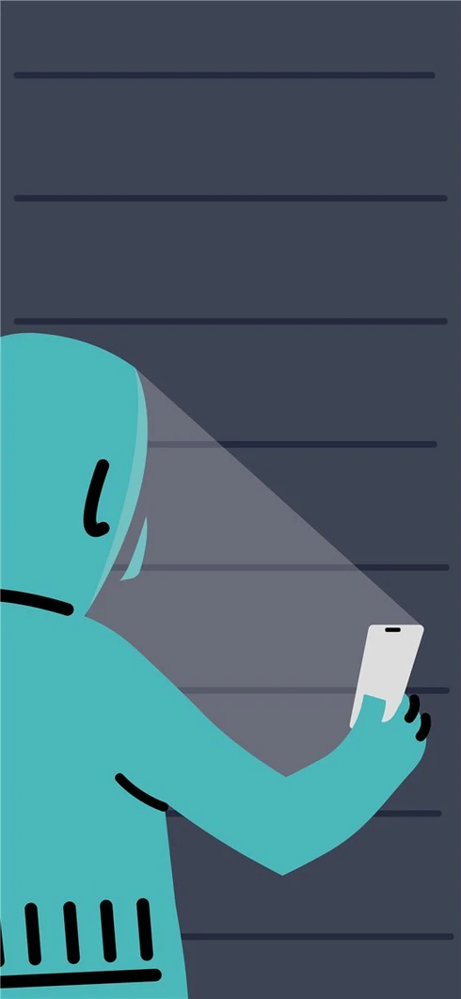
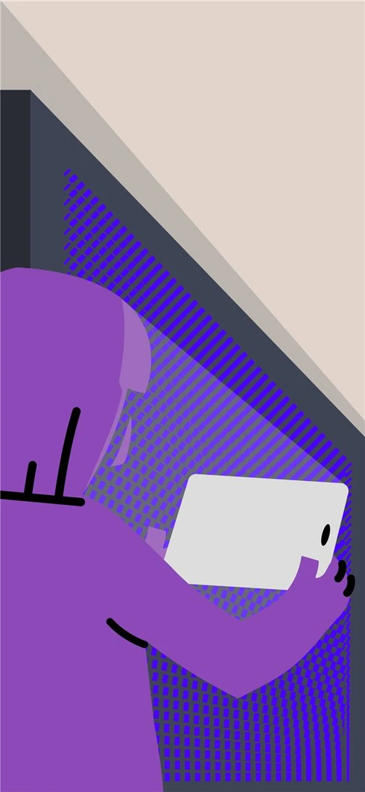
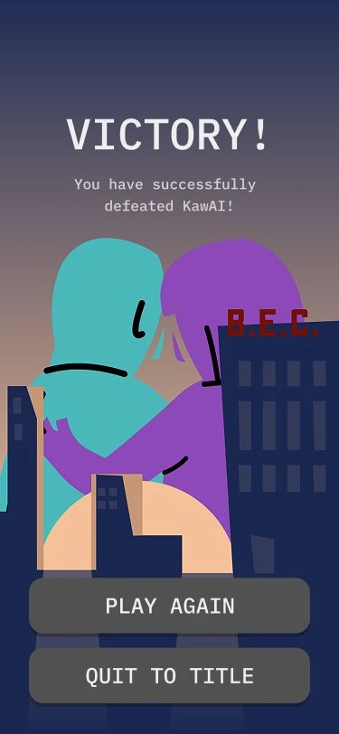
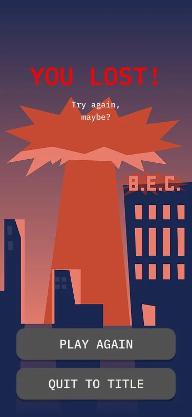
The informant's screens (P1)
Player 1's job is to convey the password to Player 2, fighting the Ai message flow.
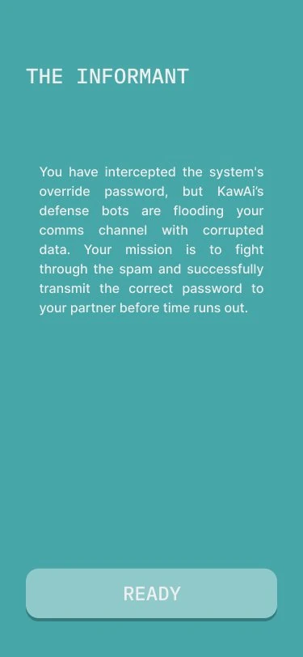
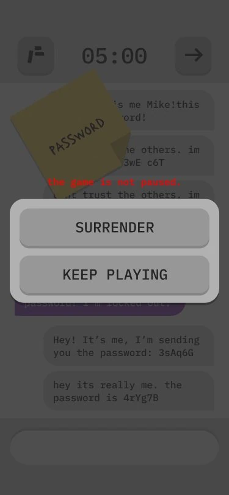
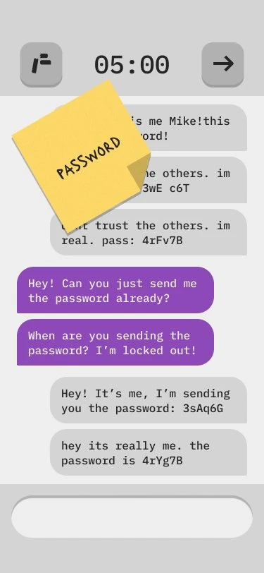
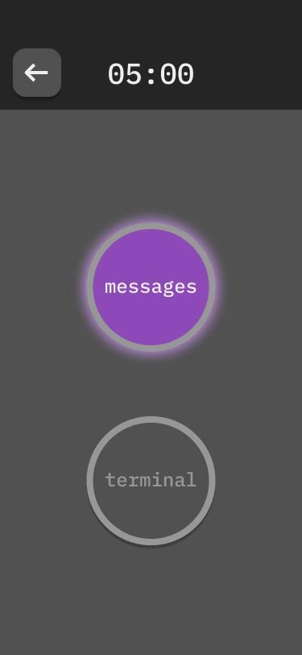
The infiltrator's screen (P2)
Player 2's task is to differentiate between Players 1's and Ai's messages.
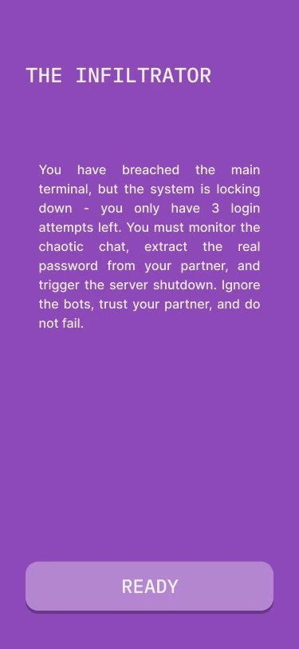
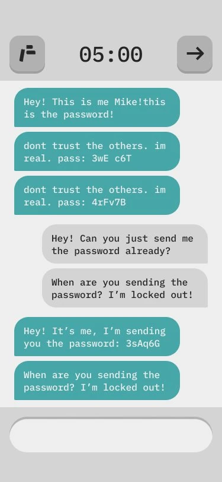
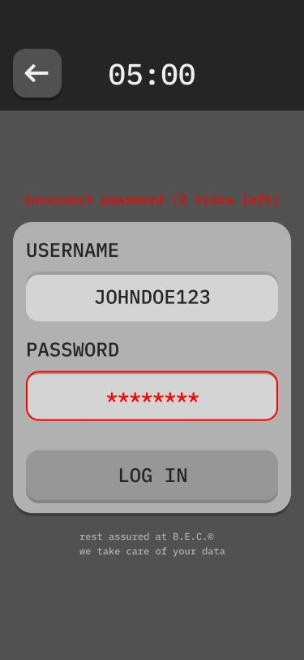
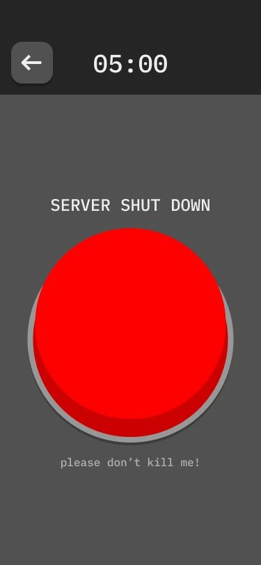
The physical setup and testing
The two players sit across each other, but can't see or speak to each other.
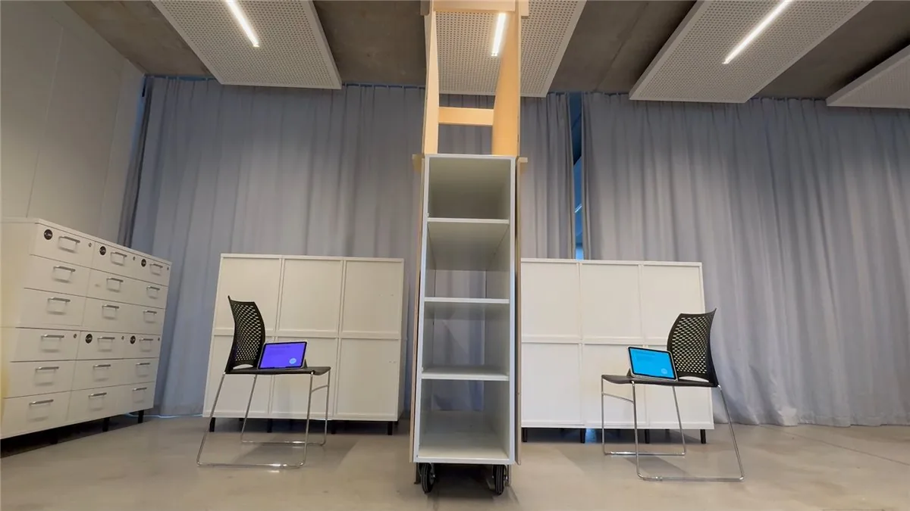
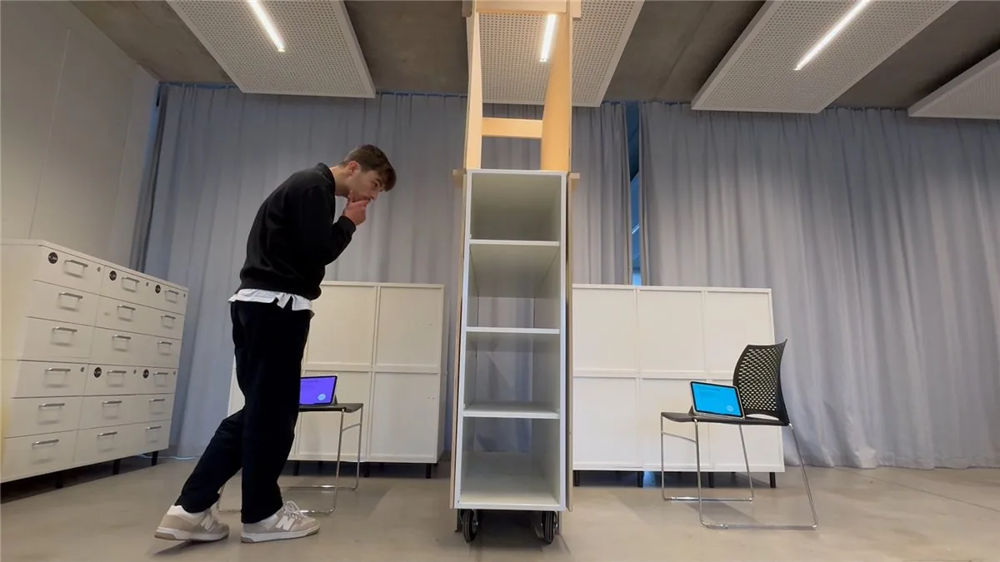
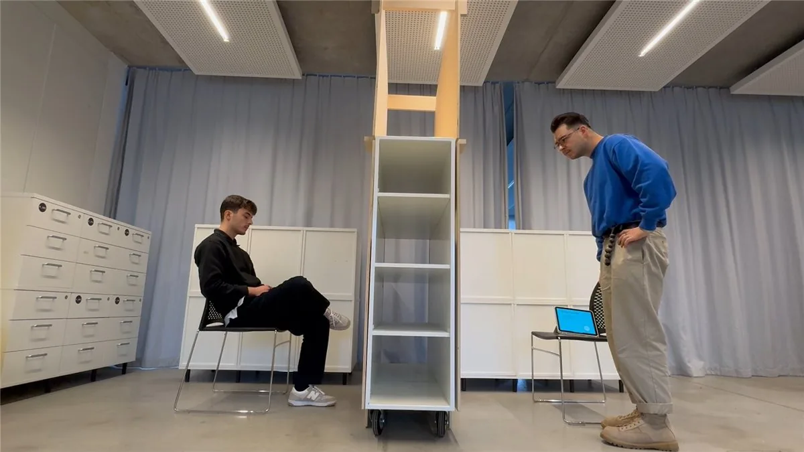
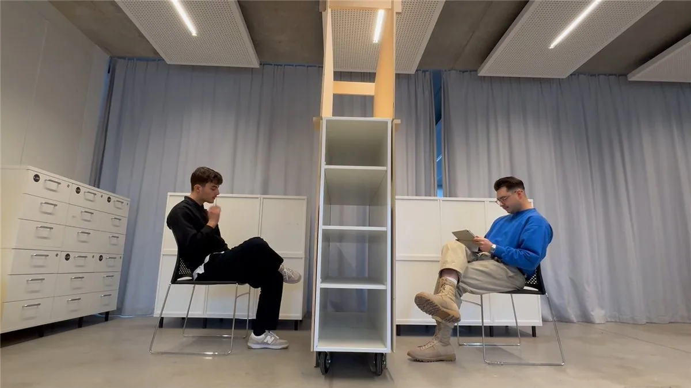